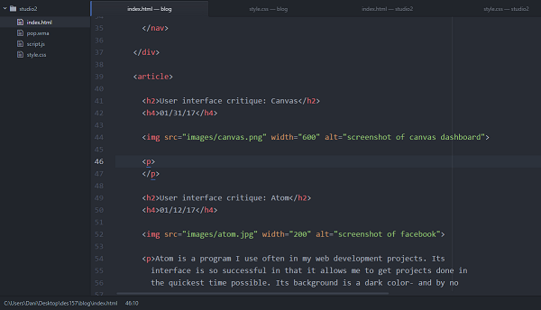

User interface
01/12/17
Atom is a program I use often in my web development projects. Its interface is so successful in that it allows me to get projects done in the quickest time possible. Its background is a dark color- and by no accident. I really appreciate the clear yet mild contrast of the background and the characters. The makers of atom know that coders work long hours programming, and often times in the evening when the brain is buzzing and calculating ideas. Another great feature of atom is the color coded style format. This was very helpful for me as a novice coder. All in all, the user interface of Atom is unbeatable when it comes to practicing code successfully.